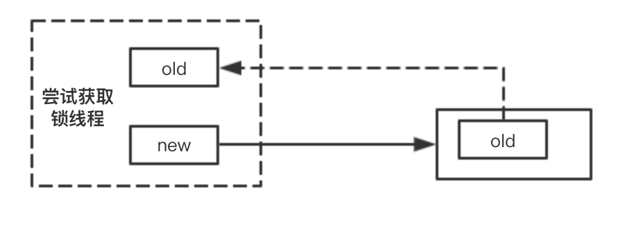
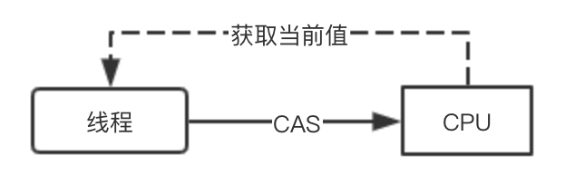
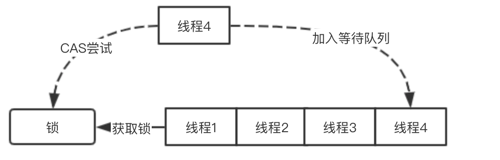
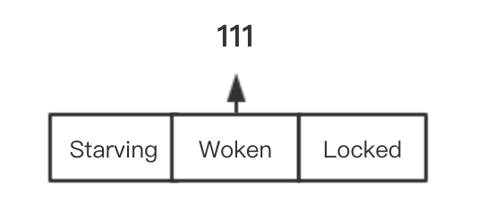
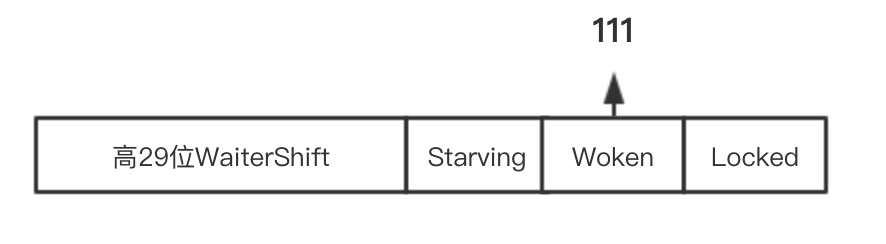
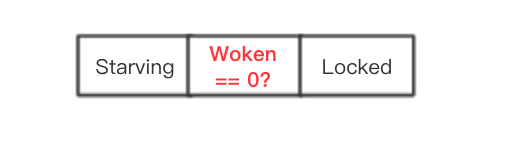
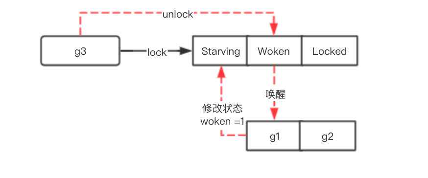
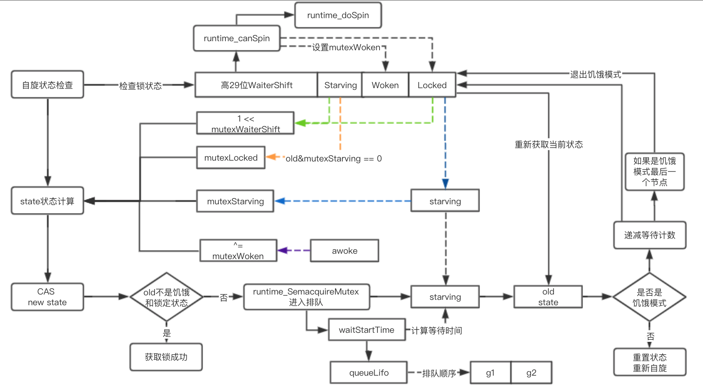
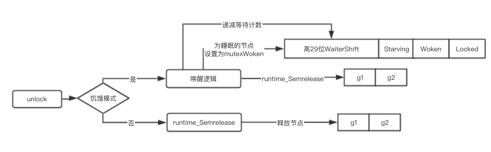

原文连接:https://www.cnblogs.com/buyicoding/p/12082162.html
1. 锁的基础概念
1.1 CAS与轮询
1.1.1 cas实现锁

在锁的实现中现在越来越多的采用CAS来进行，通过利用处理器的CAS指令来实现对给定变量的值交换来进行锁的获取
1.1.2 轮询锁

在多线程并发的情况下很有可能会有线程CAS失败，通常就会配合for循环采用轮询的方式去尝试重新获取锁
1.2 锁的公平性

锁从公平性上通常会分为公平锁和非公平锁，主要取决于在锁获取的过程中，先进行锁获取的线程是否比后续的线程更先获得锁，如果是则就是公平锁：多个线程按照获取锁的顺序依次获得锁，否则就是非公平性
1.3 饥饿与排队
1.3.1 锁饥饿
锁饥饿是指因为大量线程都同时进行获取锁，某些线程可能在锁的CAS过程中一直失败，从而长时间获取不到锁
1.3.2 排队机制

上面提到了CAS和轮询锁进行锁获取的方式，可以发现如果已经有线程获取了锁，但是在当前线程在多次轮询获取锁失败的时候，就没有必要再继续进行反复尝试浪费系统资源，通常就会采用一种排队机制，来进行排队等待
1.4 位计数
在大多数编程语言中针对实现基于CAS的锁的时候，通常都会采用一个32位的整数来进行锁状态的存储
2. mutex实现
2.1 成员变量与模式
2.1.1 成员变量
在go的mutex中核心成员变量只有两个state和sema,其通过state来进行锁的计数，而通过sema来实现排队
type Mutex struct {
state int32
sema uint32
}2.1.2 锁模式
锁模式主要分为两种
| 描述 | 公平性 | |
|---|---|---|
| 正常模式 | 正常模式下所有的goroutine按照FIFO的顺序进行锁获取,被唤醒的goroutine和新请求锁的goroutine同时进行锁获取，通常新请求锁的goroutine更容易获取锁 | 否 |
| 饥饿模式 | 饥饿模式所有尝试获取锁的goroutine进行等待排队，新请求锁的goroutine不会进行锁获取，而是加入队列尾部等待获取锁 | 是 |
上面可以看到其实在正常模式下，其实锁的性能是最高的如果多个goroutine进行锁获取后立马进行释放则可以避免多个线程的排队消耗
同理在切换到饥饿模式后，在进行锁获取的时候，如果满足一定的条件也会切换回正常模式，从而保证锁的高性能
2.2 锁计数
2.2.1 锁状态

在mutex中锁有三个标志位，其中其二进制位分别位001(mutexLocked)、010(mutexWoken)、100(mutexStarving), 注意这三者并不是互斥的关系，比如一个锁的状态可能是锁定的饥饿模式并且已经被唤醒
mutexLocked = 1 << iota // mutex is locked
mutexWoken
mutexStarving2.2.2 等待计数

mutex中通过低3位存储了当前mutex的三种状态，剩下的29位全部用来存储尝试正在等待获取锁的goroutine的数量
mutexWaiterShift = iota // 32.3唤醒机制
2.3.1 唤醒标志

唤醒标志其实就是上面说的第二位，唤醒标志主要用于标识当前尝试获取goroutine是否有正在处于唤醒状态的，记得上面公平模式下，当前正在cpu上运行的goroutine可能会先获取到锁
2.3.2 唤醒流程

当释放锁的时候，如果当前有goroutine正在唤醒状态，则只需要修改锁状态为释放锁，则处于woken状态的goroutine就可以直接获取锁，否则则需要唤醒一个goroutine, 并且等待这个goroutine修改state状态为mutexWoken，才退出
2.4 加锁流程

2.3.1 快速模式
如果当前没有goroutine加锁，则并且直接进行CAS成功，则直接获取锁成功
// Fast path: grab unlocked mutex.
if atomic.CompareAndSwapInt32(&m.state, 0, mutexLocked) {
if race.Enabled {
race.Acquire(unsafe.Pointer(m))
}
return
}2.3.2 自旋与唤醒
// 注意这里其实包含两个信息一个是如果当前已经是锁定状态，然后允许自旋iter主要是计数次数实际上只允许自旋4次
// 其实就是在自旋然后等待别人释放锁，如果有人释放锁，则会立刻进行下面的尝试获取锁的逻辑
if old&(mutexLocked|mutexStarving) == mutexLocked && runtime_canSpin(iter) {
// !awoke 如果当前线程不处于唤醒状态
// old&mutexWoken == 0如果当前没有其他正在唤醒的节点，就将当前节点处于唤醒的状态
// old>>mutexWaiterShift != 0 :右移3位，如果不位0，则表明当前有正在等待的goroutine
// atomic.CompareAndSwapInt32(&m.state, old, old|mutexWoken)设置当前状态为唤醒状态
if !awoke && old&mutexWoken == 0 && old>>mutexWaiterShift != 0 &&
atomic.CompareAndSwapInt32(&m.state, old, old|mutexWoken) {
awoke = true
}
// 尝试自旋，
runtime_doSpin()
// 自旋计数
iter++
// 从新获取状态
old = m.state
continue
}2.3.3 更改锁状态
流程走到这里会有两种可能：
1.锁状态当前已经不是锁定状态
2.自旋超过指定的次数，不再允许自旋了
new := old
if old&mutexStarving == 0 {
// 如果当前不是饥饿模式，则这里其实就可以尝试进行锁的获取了|=其实就是将锁的那个bit位设为1表示锁定状态
new |= mutexLocked
}
if old&(mutexLocked|mutexStarving) != 0 {
// 如果当前被锁定或者处于饥饿模式，则增等待一个等待计数
new += 1 << mutexWaiterShift
}
if starving && old&mutexLocked != 0 {
// 如果当前已经处于饥饿状态，并且当前锁还是被占用，则尝试进行饥饿模式的切换
new |= mutexStarving
}
if awoke {
if new&mutexWoken == 0 {
throw("sync: inconsistent mutex state")
}
// awoke为true则表明当前线程在上面自旋的时候，修改mutexWoken状态成功
// 清除唤醒标志位
// 为什么要清除标志位呢？
// 实际上是因为后续流程很有可能当前线程会被挂起,就需要等待其他释放锁的goroutine来唤醒
// 但如果unlock的时候发现mutexWoken的位置不是0，则就不会去唤醒，则该线程就无法再醒来加锁
new &^= mutexWoken
}2.3.3 加锁排队与状态转换
再加锁的时候实际上只会有一个goroutine加锁CAS成功，而其他线程则需要重新获取状态，进行上面的自旋与唤醒状态的重新计算，从而再次CAS
if atomic.CompareAndSwapInt32(&m.state, old, new) {
if old&(mutexLocked|mutexStarving) == 0 {
// 如果原来的状态等于0则表明当前已经释放了锁并且也不处于饥饿模式下
// 实际的二进制位可能是这样的 1111000, 后面三位全是0，只有记录等待goroutine的计数器可能会不为0
// 那就表明其实
break // locked the mutex with CAS
}
// 排队逻辑，如果发现waitStatrTime不为0，则表明当前线程之前已经再排队来，后面可能因为
// unlock被唤醒，但是本次依旧没获取到锁，所以就将它移动到等待队列的头部
queueLifo := waitStartTime != 0
if waitStartTime == 0 {
waitStartTime = runtime_nanotime()
}
// 这里就会进行排队等待其他节点进行唤醒
runtime_SemacquireMutex(&m.sema, queueLifo)
// 如果等待超过指定时间，则切换为饥饿模式 starving=true
// 如果一个线程之前不是饥饿状态，并且也没超过starvationThresholdNs，则starving为false
// 就会触发下面的状态切换
starving = starving || runtime_nanotime()-waitStartTime > starvationThresholdNs
// 重新获取状态
old = m.state
if old&mutexStarving != 0 {
// 如果发现当前已经是饥饿模式，注意饥饿模式唤醒的是第一个goroutine
// 当前所有的goroutine都在排队等待
// 一致性检查，
if old&(mutexLocked|mutexWoken) != 0 || old>>mutexWaiterShift == 0 {
throw("sync: inconsistent mutex state")
}
// 获取当前的模式
delta := int32(mutexLocked - 1<<mutexWaiterShift)
if !starving || old>>mutexWaiterShift == 1 {
// 如果当前goroutine不是饥饿状态，就从饥饿模式切换会正常模式
// 就从mutexStarving状态切换出去
delta -= mutexStarving
}
// 最后进行cas操作
atomic.AddInt32(&m.state, delta)
break
}
// 重置计数
awoke = true
iter = 0
} else {
old = m.state
}2.5 释放锁逻辑

2.5.1 释放锁代码
func (m *Mutex) Unlock() {
if race.Enabled {
_ = m.state
race.Release(unsafe.Pointer(m))
}
// 直接进行cas操作
new := atomic.AddInt32(&m.state, -mutexLocked)
if (new+mutexLocked)&mutexLocked == 0 {
throw("sync: unlock of unlocked mutex")
}
if new&mutexStarving == 0 {
// 如果释放锁并且不是饥饿模式
old := new
for {
if old>>mutexWaiterShift == 0 || old&(mutexLocked|mutexWoken|mutexStarving) != 0 {
// 如果已经有等待者并且已经被唤醒，就直接返回
return
}
// 减去一个等待计数，然后将当前模式切换成mutexWoken
new = (old - 1<<mutexWaiterShift) | mutexWoken
if atomic.CompareAndSwapInt32(&m.state, old, new) {
// 唤醒一个goroutine
runtime_Semrelease(&m.sema, false)
return
}
old = m.state
}
} else {
// 唤醒等待的线程
runtime_Semrelease(&m.sema, true)
}
}
本文由博客一文多发平台 OpenWrite 发布！